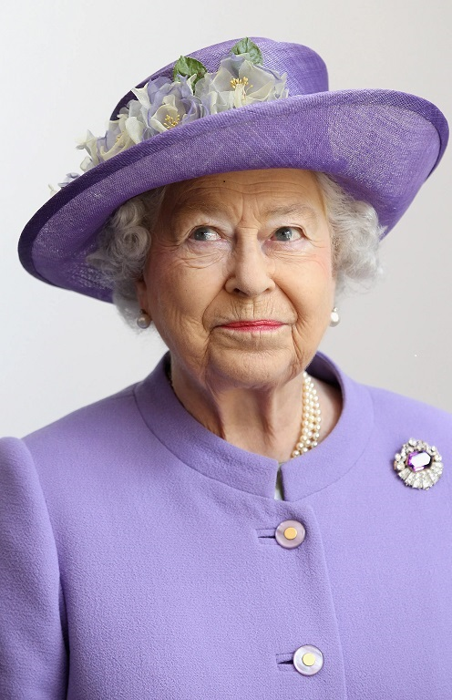

La reine d'Angleterre est bel et bien en vie!
La reine d'Angleterre est bel et bien en vie!

De nombreux indices prouvent que la Reine Elizabeth II nous ment depuis bientôt 2 ans
Depuis quelques temps, les soupçons concernant l'existance de la reine sont de plus en plus fréquentes.Coincidence ? JE NE CROIS PAS!
Morte malgré elle,la reine d'Angleterre à été victime d'un canular.
"Elle n'est pas la première à être victime de ce genre de plaisenterie. Hier (le 8 septembre 2022), des internautes ont été pris
d'un vent de panique en apprenant la mort de la reine d'Angleterre. Sauf qu'Elizabeth II est bel et bien vivante, puisqu'elle a assisté, ce matin même
(le 9 septembre 2022),à Sandringham, avec le prince William et Kate Middleton à une cérémonie.C'est sur le site Reddit que l'information a pu être vérifiée.
Le messagez original annonçant le décès de notre chère reine a été supprimé, tout comme le compte qui l'a lancée,mais l'information est devenue
virale et a fait le tour du monde très rapidement. Bien sûr, le Buckingham Palace n'a pas commenté le hoax(buzz), n'ayant pas pour habitude de
répondre à ce genre d'informations."
Official Royal Journal- Marry Campus
Des adieux fastidieux
A 92 ans, le 8 septembre 2022 à 15:10, la reine mourait selon les dires des médias et du Premier ministre Boris Johnson.Des adieux et des pleurs
parcouraient le monde entier suite à cette terrible nouvelle.Une grnade cérémonie à été faite en son honneur, pourtant elle y assistait elle même
debout au fond de la pièce.

Au lieu de rétablir la vérité, elle a préféré accepter sa "mort" et d'en tirer profit.
Les ventes de produits dérivés, photographies et nourriture ont rapporté 18.8 millions de livres,soit près de 22 millions d'euros.
En effet, malgré la fermeture d'une majorité de boutiques officicelles, les sites de vente en ligne tirent profit du "décès" de la Reine, avec des produits
comme les tee-shirts, les mugs ou encore les figurines, qui partent comme des petits pains. Effectivement, la Reine a choisi leurer le monde entier en mettant
en scène sa subite disparition dans le seul but de faire du bénéfice. Ainsi sa fortune ne cesse d'augmenter sans que personne ne soit au courant de cette petite
magnigance...

Pendant que notre chère Reine vivante et en bone santé se rempli les poches, des citoyens dépités se receuillent devant se qui est reconnu comme sa tombe.
Cecile J.W. Janssens, une épidémiologiste néerlandaise est morte le même jour que la reine. A 54 ans, les médecins trouvaient sa mort assez prématurée et sans
raisons. L'autopsie n'ayant rien révélé, la femme fut rendue à sa famille. Cependant le corps n'est jamais arrivé à destination. Le véhicule la transportant à fait
un grave accident au cours duquel le corps à été projeté dans la mer. Nous n'avons malheureusement pas retrouvé la dépouille de Cecile. Plutard dans la journée on
apprenait le décès de Elizabeth II. Certaines personnes pensent donc que ces deux évènements sont loins d'être un coîncidence. Selon les journalistes les plus entétés,
certains n'hésitent pas à affirmer que les deux corps qui se ressemblent beaucoup on étés échangés lors de la cérémonie mortuaire. Cependant, ce mystère ne peut être
éclairci,à moins qu'on ne fasse des examens sur la dépouille. Malheureusement, les preuves dont disposent les personnes qui sont au courant de la vérité sont beaucoup
trop maigres pour espérer des réponses à la hauteur de nos attentes.